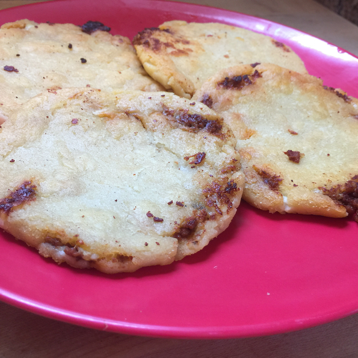

An El Salvadoran treat, these homemade tortillas stuffed with cheese are great with a traditional coleslaw called curtido.
To serve, slice open one side of a pupusa, and spoon curtido into the opening.
Farmer's cheese or mozzarella can be substituted for queso blanco.